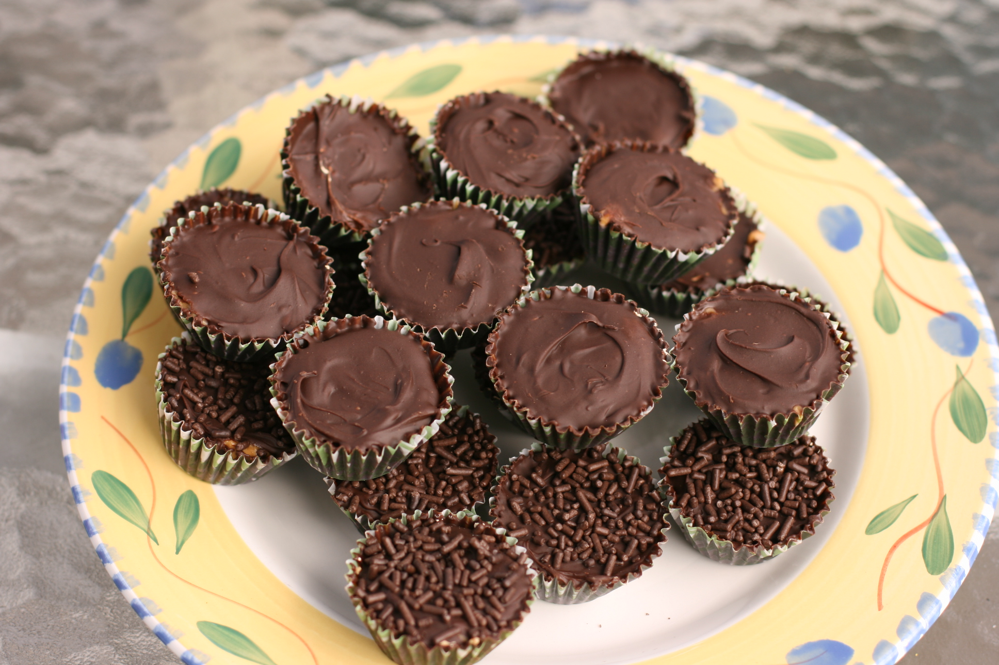

Home
Peanut Butter Cups

Peanut butter cups are a classic treat that combines the rich flavor of
peanut butter with a smooth, creamy filling. They were one of my dad's
favorite treats so they're not only delicious, but a meaningful dessert to
me.
Ingredients
- 1 cup peanut butter
- 1/4 cup powdered sugar
- 1/4 cup unsalted butter, softened
- 1 teaspoon vanilla extract
- 2 cups semisweet chocolate chips
- 1 tablespoon vegetable oil
Instructions
-
In a medium bowl, mix together the peanut butter, powdered sugar,
softened butter, and vanilla extract until smooth and well combined.
-
Line a muffin tin with paper liners. Spoon a small amount of the peanut
butter mixture into each liner, filling about 1/3 of the way.
-
In a microwave-safe bowl, melt the chocolate chips and vegetable oil
together in 30-second intervals, stirring after each interval until
smooth.
-
Pour the melted chocolate over the peanut butter layer in each liner,
filling to the top.
- Refrigerate for at least 1 hour or until the chocolate is set.
-
Once set, remove from the muffin tin and enjoy your homemade peanut
butter cups!